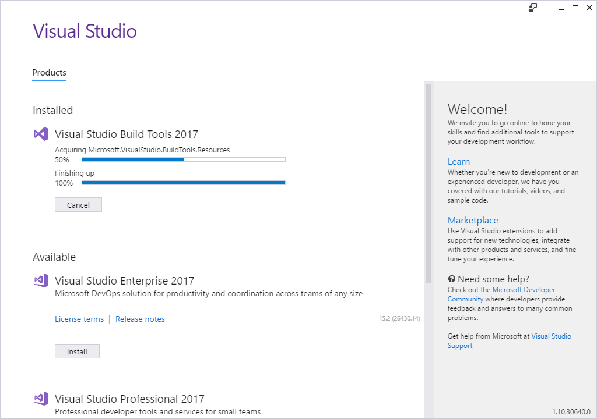

Stride doesn't run
Prerequisites
If you're having trouble running Stride, make sure you've installed all the prerequisites:
- .NET Framework 4.7.2
- Visual C++ Redistributable 2019
- Build Tools for Visual Studio
Alternatively, uninstall Stride, restart the Stride installer, and install the prerequisites when prompted.
.NET Framework 4.7.2
To check if this is installed, see Control Panel > Programs > Programs and Features and look for an entry containing .NET 4.7.2.

If it's not installed, you can download it from the Microsoft Download Center.
Note
If you install Visual Studio, make sure you also install the .Net Framework support. Just the Visual Studio base installation isn't enough.
Visual C++ Redistributable 2019
To check if this is installed, see Control Panel > Programs > Programs and Features and look for 2015-2019 Redistributable.

If it's not installed, you can download the 2019 Redistributable from Visual Studio Downloads (under Other Tools and Frameworks).
Visual Studio (only for .NET Framework version)
If you have Visual Studio 2019 installed, you need to have the following workloads and/or components installed:
- .NET desktop development
- .NET core cross-platform development, with .NET Core 2.1 Runtime (LTS) optional component enabled.
On top of that, if you still have Visual Studio 2017 installed, it should be version 15.9+.
Build Tools for Visual Studio (only for .NET Framework version)
If you don't have Visual Studio installed and don't want to install it, you need to install Build Tools for Visual Studio. You can download this from Visual Studio Downloads (under Other Tools and Frameworks).
Note
Windows uses the Visual Studio installer to install the Visual C++ Redistributable and Build Tools for Visual Studio prerequisites. If you don't need Visual Studio, don't worry – it doesn't install it. 
.NET SDK 5.0 (only for .NET version)
.NET SDK 5.0 should have been installed by Stride prerequisite installer, if Visual Studio 2019 didn't do it previously.
If for some reason you need to install it manually, you can use this link.